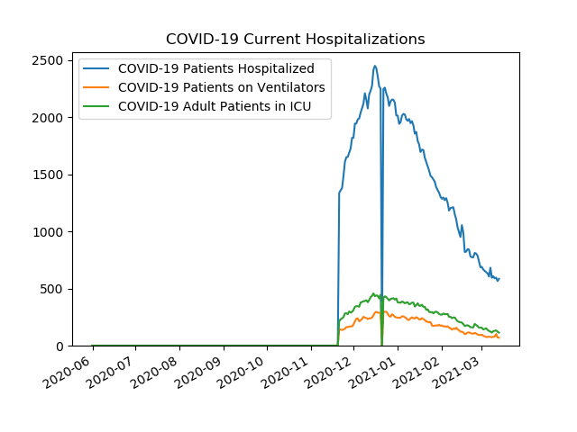
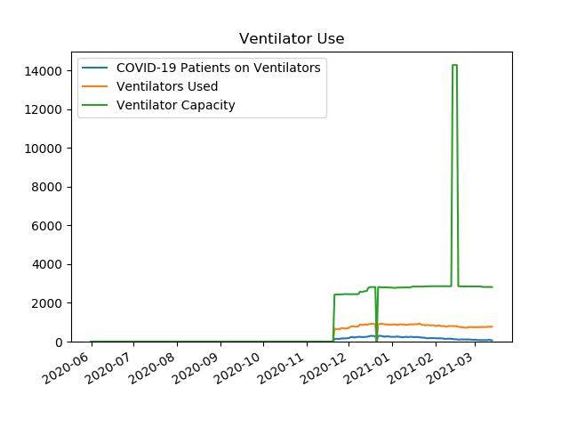
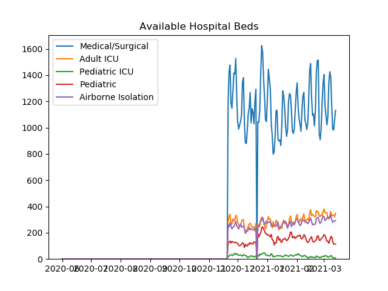
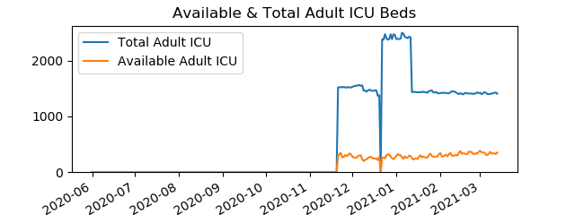
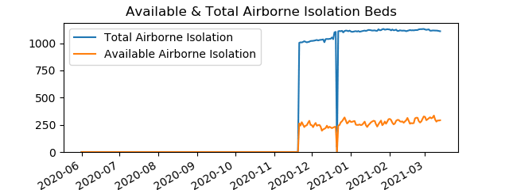
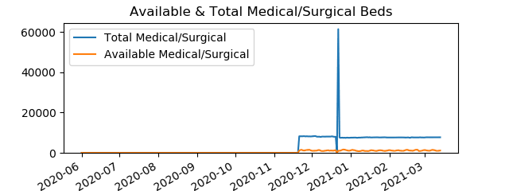
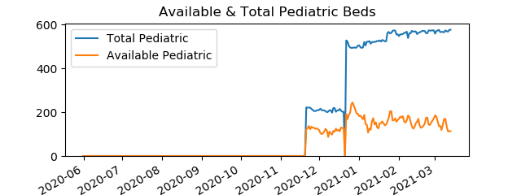

Active COVID-19 Hospitalizations in Southeast
Data is from
PA Dept Of Health
COVID-19 Current Hospitalizations
Date
COVID-19 Patients Hospitalized
COVID-19 Patients on Ventilators
COVID-19 Adult Patients in ICU
20201121
1338
141
214
20201201
1821
185
312
20210101
2015
245
379
20210122
1573
209
318

Ventilator Use
Date
COVID-19 Patients on Ventilators
Ventilators Used
Ventilator Capacity
20201121
141
674
2427
20201201
185
689
2448
20210101
245
882
2776
20210122
209
867
2838

Available Hospital Beds
Date
Pediatric ICU
Airborne Isolation
Pediatric
Medical/Surgical
Adult ICU
20201121
21
263
122
1185
286
20201201
34
247
118
1040
281
20210101
29
277
182
1235
291
20210122
24
234
144
985
257

Available & Total Adult ICU Beds
Date
Available Adult ICU Beds
Total Adult ICU Beds
20201121
286
1521
20201201
281
1527
20210101
291
2385
20210122
257
1428

Available & Total Airborne Isolation Beds
Date
Available Airborne Isolation Beds
Total Airborne Isolation Beds
20201121
263
1004
20201201
247
1021
20210101
277
1108
20210122
234
1114

Available & Total Medical/Surgical Beds
Date
Available Medical/Surgical Beds
Total Medical/Surgical Beds
20201121
1185
8229
20201201
1040
8189
20210101
1235
7530
20210122
985
7695

Available & Total Pediatric Beds
Date
Available Pediatric Beds
Total Pediatric Beds
20201121
122
222
20201201
118
211
20210101
182
506
20210122
144
524

Available & Total Pediatric ICU Beds
Date
Available Pediatric ICU Beds
Total Pediatric ICU Beds
20201121
21
253
20201201
34
248
20210101
29
248
20210122
24
253